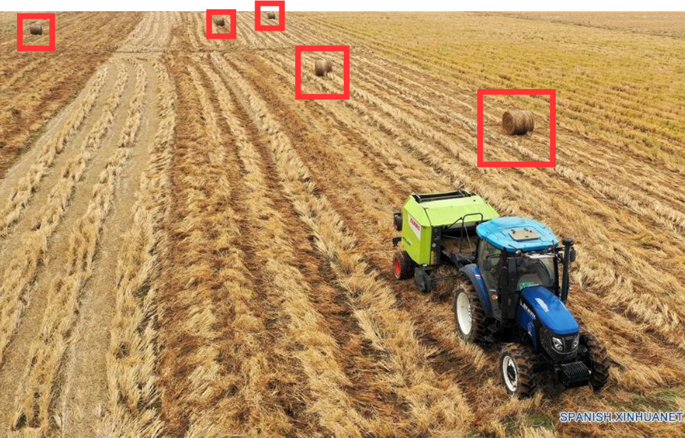
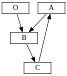
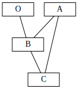
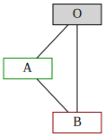
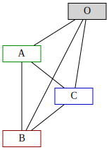

Knapsack and Travel Salesman Combined Problem I¶
This problem comes out of simply adding the restrictions of two of the most famous optimization problems: Knapsack problem and the Travel Salesman problem.
Next articles in this series:
Introduction¶
So imagin that you are a field worker and after cutting the wheat, you have to pick up the bales that are sparsed all over the field. Or that you have to program the route for a robot expeditioner in Mars with the periodic goal of getting the precious stones to be analyzed. This two scenarios have a common problem. You want to minimize the traveled distance but have limited capacity. Most probably you will be required to go and pick up some items go back to unload and repeat until you have all of them.

Figure 1: A farmer that picks up the sheaves with a tractor.¶ |
 Figure 2: A robot that collects minerals in the Mars station.¶ |
So, firstly, we will cover the basics of the two famous optimizatio problems: Knapsack problem and Travel Salesman problem.
Knapsack problem¶
The statement of the Knapsack problem is the following. There are items that we can select, each one with a value and some weight. The knapsack can only carry certain weight, known as capcity, otherwise will break. Then, the objective is to decide which items select and which leave in order to maximize the value of the things that we can put inside of our knapsack.
The number of items to carry is not bounded, only the weight it can support. One first approximation to a solution might be to put the things with most value first. However, this does not lead to general optimal solution for this problem.
The complexity of the problem is that it is necessary to search for (almost) all combinations in order to solve the problem which has a great computational cost. Said with more technical words the problem is NP-hard, it can not be solved in polynomial time.
Travel Salesman Problem¶
The Travel Salesman problem is about distances rather than weights. In this case we have a set of locations that we want to visit scattered over a space. All places have to be visited. What we want to minimize is the distance traveled, and thus save time and fuel, because we care about our employees and climate change.
Travel Salesmane representation problem¶
Graphs :The actual positions of the locations is not relevant but the distance between them is. The problem is usually presented with a graph which vertexes are the locations and the edges are the distance from one vertex to the other.

Figure 3: Directed¶ |

Figure 4: Undirected¶ |
The Problem¶
In this case, we have a picker which has to pick-up (hence the name) a series of items that are spread on a field. All items have to be taken and put into a bin that is on the Origin. This game dynamic will go as follows:
The picker will go from the current place to the next one.
If there is a item to pick in the next location, the picker will take it and put it on a sack that they carry on. - The picker cannot take the item if the total weight of the items after taking it is grater than the sack capacity.
If the picker goes to the Origin, it will unpack everything that there is on the sack and put it on the Origin’s bin.
However, there is a constraint, the picker can not carry at the same time more than its capacity.

Figure 5: Two nodes and the Origin.¶ |

Figure 6: Three nodes and the Origin.¶ |
Tree decision structure¶
At first our picker will be on the Origin with zero objects. Then it can go any of the nodes A or B. After this firs step, if allowed by its capacity, it can go to the other node (B or A), otherwise it will have to pass throught the Origin to unpack. Finally, it has to end in the Origin.
Figure 7: Decision tree for two nodes and the Origin.¶
Figure 8: Decision tree for three nodes and the Origin.¶
Total number of solutions¶
To finish this article, we will explose the total number of possible solutions that this problem has.
The factorial of N, \(N!\), represents all the possible order of picking elements without going throug the Origin. The exponential part, \(2^{N-1}\), gathers all permutations of going from the element picked to the Origin between items. The picker can go to the Origin or not up to \(N-1\) times.
Example¶
# Distance matrix
[[0. 9.75354174 4.87325056]
[9.75354174 0. 5.07073511]
[4.87325056 5.07073511 0. ]]
[
# Weight and position
A = Ew(E(weight=3),P(x=1.4943,y=1.6344)),
B = Ew(E(weight=1),P(x=-7.4938,y=-2.1532)),
C = Ew(E(weight=3),P(x=-3.2830,y=0.6719))]
COST |
PATH |
|---|---|
20.6478 |
O->B->C->O->A->O |
20.6478 |
O->C->B->O->A->O |
20.6478 |
O->A->O->B->C->O |
20.6478 |
O->A->O->C->B->O |
26.4671 |
O->A->B->O->C->O |
26.4671 |
O->B->A->O->C->O |
26.4671 |
O->C->O->A->B->O |
26.4671 |
O->C->O->B->A->O |
26.7251 |
O->A->O->B->O->C->O |
26.7251 |
O->A->O->C->O->B->O |
26.7251 |
O->B->O->A->O->C->O |
26.7251 |
O->B->O->C->O->A->O |
26.7251 |
O->C->O->A->O->B->O |
26.7251 |
O->C->O->B->O->A->O |